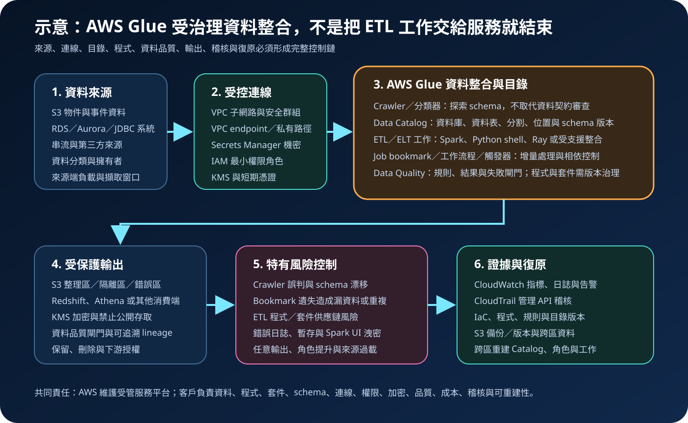

AWS Glue：資料整合、Data Catalog 與安全治理
AWS Glue 是無伺服器資料整合服務，提供集中式 Data Catalog、crawler、ETL 工作、工作流程、schema 管理與資料品質能力。服務可減少叢集與執行環境維護，但不會代替資料契約、程式碼審查、來源負載控制、網路隔離、機密管理、成本護欄、資料正確性或災難復原設計。
作者：Dr. William｜查閱與發布：2026-09-30
服務定位
AWS Glue 適合探索與編目多種資料來源、批次或串流轉換資料、建立可重複執行的整合流程，以及將資料交付到 S3、資料倉儲、分析或機器學習工作負載。Data Catalog 也可供 Athena、EMR、Redshift Spectrum 與其他整合服務使用。
Glue 的核心價值是把目錄、資料整合與受管運算放在同一服務族群中，而不是自動保證資料可信。來源 schema、crawler 判斷、ETL 程式、套件、連線、bookmark、輸出路徑與角色設定都可能改變資料結果或擴大存取範圍，必須納入版本、測試、稽核與復原。
核心概念與適用邊界
目錄與資料探索
- Data Catalog：保存資料庫、資料表、欄位、分割、位置與其他中繼資料；它是持久化的技術目錄，不等同完整商業詞彙、資料品質或權責治理。
- Crawler：連線到資料來源、分類格式並建立或更新表；推論結果仍須由資料擁有者審查，避免錯誤型別、錯誤分割或敏感位置被納入。
- Classifier：判斷資料格式與 schema，可使用內建或自訂分類器；自訂規則需測試錯誤匹配與惡意輸入。
- Schema Registry：協助串流應用集中管理與驗證 schema 版本及相容性，不取代事件內容授權與個資分類。
- 資料品質：Glue Data Quality 可建立規則、評估結果與建議；規則需要版本、門檻、處理人及失敗後動作。
整合與執行
- ETL 工作：可使用 Apache Spark、Python shell、Ray 或支援的整合方式執行轉換；版本、worker 類型、容量與支援功能依區域及工作類型而異。
- Trigger／Workflow：以排程、事件或相依條件啟動工作，串接 crawler 與 job；需處理重試、逾時、重複事件及部分成功。
- Job bookmark：追蹤已處理資料以支援增量工作；重設、回溯、來源變更或不支援的格式可能造成漏資料或重複處理。
- Connection：保存連線屬性並連接 JDBC、網路或其他來源；credential 應由 Secrets Manager 管理，不直接寫入程式或參數。
- 互動式與視覺工具：Glue Studio、notebook 與 DataBrew 等工具降低開發門檻，但發布到正式環境前仍需程式碼審查、測試及權限分離。
適合與不適合的使用情境
適合
- 需要建立或維護共用技術目錄，讓分析服務能一致取得表、欄位、分割與位置。
- 資料處理以批次、微批次或受支援串流為主，可接受工作啟動、重試與分散式處理延遲。
- 需要把多來源資料清理、遮罩、驗證、格式轉換與分割後寫入資料湖或分析平台。
- 需要以工作流程、觸發器、bookmark 與資料品質規則管理可重複執行的資料管線。
- 團隊能管理程式、依賴套件、schema、資料契約、角色、KMS、網路、成本與復原。
不適合或不能單獨完成
- 需要毫秒級同步交易、逐筆鎖定、完整 OLTP 語意或長時間固定低延遲 API。
- 只需要單一、簡短且低頻的檔案轉換，Glue 工作啟動與受管運算成本不一定最合適。
- 希望 crawler 自動判斷即可取代資料契約、商業定義、敏感資料分類與 schema 審查。
- 來源系統無法承受平行掃描或抽取，卻未設定擷取窗口、分割讀取與來源端限流。
- 把 serverless 誤解為不需要程式維護、套件修補、資料驗證、權限治理或跨區重建。
示意故事案例：多通路訂單資料整合
以下為示意案例，不代表特定企業或正式部署。 一家零售團隊需要整合門市資料庫、網站訂單與 S3 中的合作夥伴檔案。來源先完成擁有者、分類、擷取頻率與負載窗口登記。Glue crawler 只在核准位置探索資料，schema 變更先進隔離環境；正式表由版本化定義管理，不允許 crawler 任意覆寫關鍵欄位。
Glue 工作在私有子網路執行，透過限制性安全群組與 VPC endpoint 存取服務；資料庫 credential 從 Secrets Manager 取得。工作先驗證 schema、惡意或異常內容、主鍵重複與個資欄位，再遮罩非必要識別資料，依日期與通路輸出壓縮 Parquet。資料品質規則未達門檻時只寫入隔離區並停止發布。Job bookmark、批次識別與輸出 manifest 共同支持重跑及對帳。CloudWatch 監控失敗、延遲、DPU 使用與資料品質，CloudTrail 保存 Glue、IAM、KMS 與目錄變更。程式、IaC、規則、目錄匯出及必要資料在另一區域定期演練重建。

建置與運作流程
- 定義資料產品：記錄來源、擁有者、敏感度、更新頻率、資料量、品質門檻、消費端、RPO／RTO 與月成本上限。
- 建立資料契約：定義 schema、主鍵、分割、允許空值、相容性、個資處理、錯誤格式與變更審核。
- 設計區域與路徑：分離隔離、原始、整理、錯誤與輸出區，設定 Block Public Access、bucket policy、生命週期與 KMS。
- 配置身分與網路：人員採聯合登入、MFA 與短期憑證；工作角色只允許必要來源、輸出、Catalog、KMS、日誌與機密。
- 建立受控連線：優先使用私有子網路、VPC endpoint、限制性安全群組與 DNS；credential 存於 Secrets Manager。
- 治理 Data Catalog：限制建立、更新、刪除表與分割的權限；對關鍵 schema 採版本化部署，不讓 crawler 無條件覆寫。
- 開發與測試工作：固定 Glue 版本、worker 類型、依賴套件與參數；測試空檔案、超大檔案、格式錯誤、資料傾斜及惡意輸入。
- 設計增量與重跑：明確記錄 bookmark 支援範圍、批次識別、去重鍵、回溯窗口、重設程序與輸出提交方式。
- 加入品質閘門：對完整性、唯一性、範圍、參照關係與新鮮度建立規則，指定警告、隔離或阻止發布的門檻。
- 限制資料外流：輸出只允許核准 bucket、prefix、帳戶、區域與 KMS key；禁止任意 URL、公開位置及未核准跨帳戶寫入。
- 建立觀測：設定 CloudWatch 指標、結構化日誌、失敗與成本告警；使用 CloudTrail 追蹤目錄、工作、連線、角色與安全設定變更。
- 演練失敗：測試來源中斷、schema 漂移、bookmark 遺失、重複事件、KMS 拒絕、容量不足、套件失敗與部分輸出。
- 演練復原：從版本庫與備份在另一區域重建資料、Data Catalog、連線、KMS、IAM、工作、規則、觸發器與下游授權。
成本、可用性與維運考量
Glue ETL、互動式工作階段、crawler、Data Quality、Data Catalog 儲存與請求等能力可能採不同計費方式；S3、KMS、Secrets Manager、CloudWatch、NAT Gateway、資料傳輸、跨區複寫與目的端服務另行計費。工作啟動後的配置容量、執行時間、重試、資料傾斜、小檔案、重複處理及失敗批次都可能增加成本。
成本控制應從資料量與工作設計開始：使用增量讀取、partition pruning、欄式格式、合理檔案大小、適當 worker 類型與 Auto Scaling；設定逾時、最大重試、同時執行上限、排程窗口、成本分攤標籤與異常告警。不得只依 bookmark 推定已避免重複，還要以批次識別、去重與輸出原子性驗證結果。
Glue 受管服務的可用性不等於資料管線端到端可用。來源資料庫、S3、VPC、DNS、NAT 或 endpoint、KMS、Secrets Manager、Data Catalog、依賴套件與目的端任何一項失效，都可能使工作停止。復原計畫應保留 IaC、程式、套件鎖定、schema、資料品質規則、目錄定義與必要資料副本，並驗證另一區域是否支援相同版本與能力。
AWS Glue 特有資安風險與控制
- Crawler 過度探索：將目標限制到核准資料位置，使用專用角色，禁止探索敏感或跨租戶路徑；對新表、位置與 schema 變更告警。
- Schema 漂移與型別誤判：對正式表採資料契約、相容性測試與人工審核；高風險 crawler 不得直接覆寫正式定義。
- Job bookmark 漏失或重複：記錄 bookmark key、來源支援與重設程序，以批次 ID、去重鍵及對帳驗證增量結果。
- ETL 程式與套件供應鏈：固定版本與雜湊、使用核准套件來源、掃描弱點、最小化網路出口，並對程式碼與依賴變更執行審查。
- 執行角色權限提升：限制 iam:PassRole、Glue 工作角色、Catalog 權限、S3 prefix、KMS key 及 Secrets Manager secret；開發者不得自行改用高權限角色。
- 任意輸出與資料外流：以 IAM、bucket policy、SCP、VPC endpoint policy 與 KMS 限制目的地；監控跨帳戶、跨區及公開設定。
- 連線 credential 外洩：不得把 credential、Access Key、Secret Key、Token、密碼或 cookie 寫入程式、參數、連線 URL、錯誤訊息或日誌；改用 Secrets Manager 與輪替。
- 日誌與除錯資料洩密：遮罩記錄內容，限制 CloudWatch Logs、Spark UI 與暫存檔讀取，設定保留期限並避免輸出完整資料列。
- 私有來源橫向移動：將工作放入專用子網路與安全群組，只允許必要埠與目的地；避免與高敏感系統共用寬鬆網路規則。
- 來源過載：限制平行連線、讀取分割與執行窗口，建立資料庫 CPU、連線數及複寫延遲告警。
- 品質規則被繞過：將 Data Quality 結果連接到發布閘門，限制修改規則與門檻的權限，保存失敗資料與例外核准證據。
- KMS 或安全設定失效：限制 key policy 與 grant，監控停用、排程刪除與設定變更；確認 bookmark、日誌、暫存、Catalog 與輸出加密範圍。
共同責任邊界
AWS 負責 Glue 受管服務底層基礎設施、服務平台、受管運算與區域服務的安全。客戶負責資料內容與合法性、schema、Data Catalog、crawler、ETL 程式、套件、連線、工作角色、網路、KMS、機密、輸出、資料品質、監控、成本及復原。
客戶仍須落實 IAM 最小權限、管理者 MFA 與短期憑證、來源與工作網路隔離、S3 公開存取封鎖、KMS 加密、Secrets Manager／Parameter Store、CloudTrail／CloudWatch、資料與設定備份及跨區復原。AWS 不會替客戶判斷 crawler 建立的 schema 是否符合業務語意、ETL 是否遺漏或重複資料、套件是否可信、輸出是否含敏感欄位，或另一區域是否能在 RTO 內重建整條管線。
上線前可執行檢查清單
- □ 已記錄每個來源與輸出的擁有者、分類、schema、更新頻率、品質門檻、RPO／RTO 與月成本上限。
- □ 隔離、原始、整理、錯誤與輸出區已分離，S3 Block Public Access、bucket policy、生命週期與跨帳戶路徑均已檢查。
- □ 人員使用聯合登入、MFA 與短期憑證；iam:PassRole、Glue、Catalog、S3、KMS 與 Logs 權限已最小化。
- □ 工作位於核准子網路與安全群組，對 S3、Glue、KMS、Secrets Manager 與 Logs 優先使用私有 endpoint。
- □ credential 只存於 Secrets Manager；一般設定存於 Parameter Store，程式、參數、URL 與日誌均無明文機密。
- □ Crawler 只探索核准範圍，使用專用角色；正式 schema 不會被未審核的推論結果直接覆寫。
- □ Glue 版本、worker 類型、程式、套件、雜湊、參數、連線與資料品質規則皆已版本化。
- □ Job bookmark 的支援條件、key、重設、回溯、去重與對帳程序已用代表性資料測試。
- □ ETL 已測試空值、重複、schema 漂移、格式錯誤、資料傾斜、大檔、小檔與惡意內容。
- □ 資料品質結果會觸發警告、隔離或阻止發布，例外有期限、核准人與追蹤紀錄。
- □ 工作只能讀寫核准 bucket、prefix、資料庫、帳戶、區域與 KMS key，無任意公開或跨帳戶輸出。
- □ CloudWatch 可追蹤失敗、延遲、重試、容量、成本與品質；CloudTrail 可追蹤工作、連線、目錄、角色與安全設定變更。
- □ 已設定逾時、最大重試、同時執行上限、來源限流、預算、成本標籤與異常成本處理人。
- □ 日誌、Spark UI、暫存資料與錯誤輸出都有限制存取、遮罩、保留及刪除程序。
- □ 已在隔離環境或另一區域重建 S3、Data Catalog、KMS、IAM、連線、工作、觸發器、規則與下游授權。
AWS 官方一手來源
- What is AWS Glue?（查閱：2026-09-30）
- AWS Glue concepts（查閱：2026-09-30）
- AWS Glue Data Catalog and crawlers（查閱：2026-09-30）
- Adding an AWS Glue crawler（查閱：2026-09-30）
- Tracking processed data using job bookmarks（查閱：2026-09-30）
- JDBC connections in AWS Glue（查閱：2026-09-30）
- Amazon VPC endpoints for AWS Glue（查閱：2026-09-30）
- AWS Glue Data Quality（查閱：2026-09-30）
- Data protection in AWS Glue（查閱：2026-09-30）
- Encrypting data written by AWS Glue（查閱：2026-09-30）
- Encrypting the AWS Glue Data Catalog（查閱：2026-09-30）
- Monitoring AWS Glue using CloudWatch（查閱：2026-09-30）
- Logging AWS Glue API calls using CloudTrail（查閱：2026-09-30）
- AWS Glue pricing（查閱：2026-09-30）
- AWS Well-Architected Security Pillar｜Shared responsibility（查閱：2026-09-30）
內容說明
本文依查閱日可用的 AWS 官方文件整理，作為基礎學習與架構討論材料；實際部署仍須依最新 Glue 版本、區域支援、worker 類型、連接器、配額、價格、資料格式、組織政策、資料分類與復原演練結果調整。